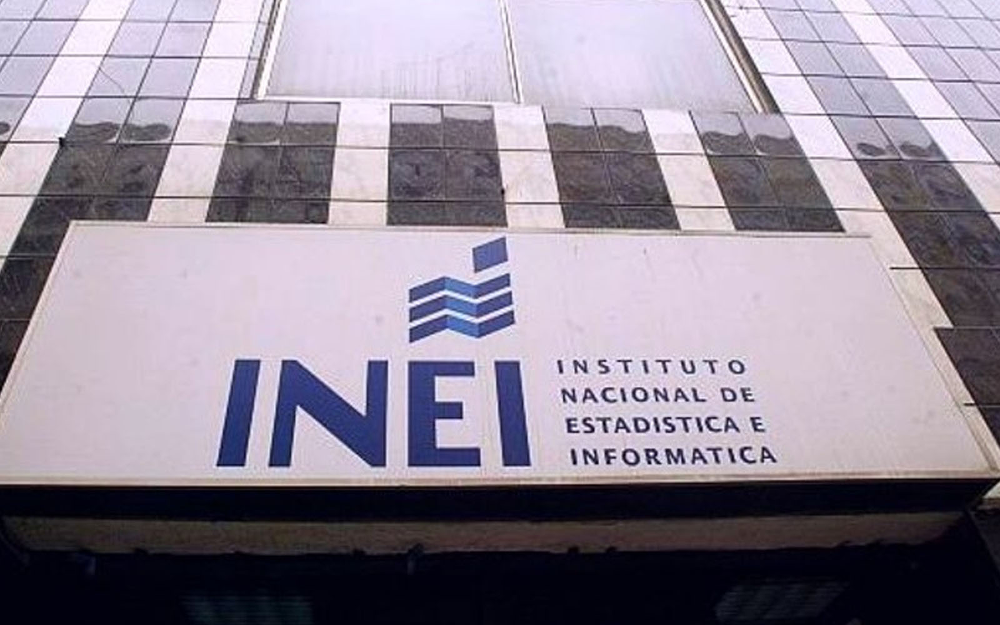
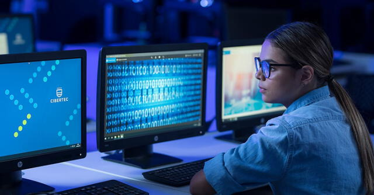

Noticias locales
Estudiante de la UNI cambió ingeniería por computación y ahora concursará por ser el mejor programador del mundo
Mijaíl Poccohuanca Copacondori es un joven de puneño que cursa el octavo ciclo de la carrera de Ciencias de la Computación en la Universidad Nacional de Ingeniería (UNI). Él, junto con sus compañeros, se prepara para representar a Perú en una competencia internacional de programación que se realizará en Kazajistán del 15 al 20 de septiembre, en la cual se ofrecerán premios significativos, así como oportunidades de empleo y pasantías en empresas tecnológicas globales. En una entrevista con La República, compartió su historia. 16 Sep 2024 | 8:06 h
¿Eres egresado? INEI busca contratar profesionales en Computación, Ingeniería y más: requisitos y cómo postular
¿Buscando empleo? El Instituto Nacional de Estadística e Informática (INEI) anunció recientemente una convocatoria de trabajo a nivel nacional que con el objetivo de ocupar 267 plazas y tiene entre sus requisitos fundamentales que los postulantes sean egresados técnicos o universitarios. 01 Ago 2024 | 22:17 h
Noticias internacionales
La computación cuántica logró la primera teletransportación con éxito en el mundo, según revelación científica
Un grupo de investigadores de la Universidad Northwestern ha alcanzado un hito importante al llevar a cabo la teletransportación cuántica de información mediante el uso de cables de fibra óptica convencionales, sin requerir modificaciones en la infraestructura existente. Este hallazgo, publicado en la revista Optica, podría transformar radicalmente el ámbito de las telecomunicaciones. La integración de la comunicación cuántica en las redes de internet actuales abre un abanico de oportunidades para crear sistemas de transmisión más seguros y eficientes. 14 Mar 2025 | 5:02 h
¿Por qué debes estudiar Computación e Informática?
La pandemia no solo cambió la forma de trabajo en las empresas, sino también aceleró su digitalización. A consecuencia de ello, la demanda de perfiles tecnológico se incrementó, siendo el más requerido las personas dedicadas a la Computación e Informática. Según la encuesta de Demanda Ocupacional (EDO) del Ministerio de Trabajo y Promoción del Empleo (MTPE), los egresados de la carrera técnica mencionada se encuentran entre los puestos más requeridos por las empresas peruanas. 13 Mar 2023 | 22:09 h
